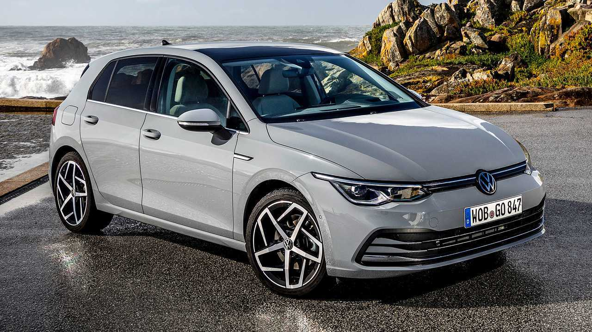
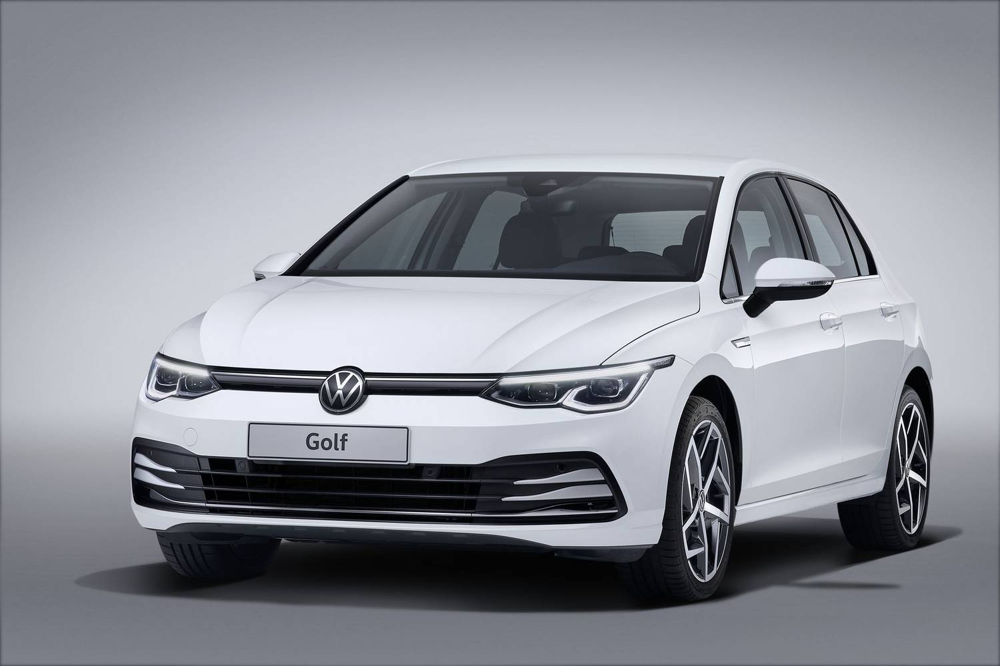

Volkswagen Golf
A Volkswagen Golf a tökéletes választás azoknak, akik értékelik a kényelmet és a minőséget. Az autó stílusos külsővel és modern belső térrel büszkélkedhet, mely magas minőségű anyagokkal van kialakítva.
A Volkswagen Golf hihetetlen vezetési élményt nyújt, legyen szó városi közlekedésről vagy hosszabb utazásokról. Az autó kiválóan alkalmazkodik a mindennapi használathoz, miközben a fejlett biztonsági funkciók gondoskodnak az Ön és az utasok védelméről.

Műszaki adatok
- - Motor: VOLKSWAGEN GOLF VII 2.0 TDI Dgc
- - Váltó: Automata/Manuális
- - Lóerő: 103 hp
Ár: $47,000
Kötelező Biztosítás: $1,500/év
Szervízköltség: $550/év